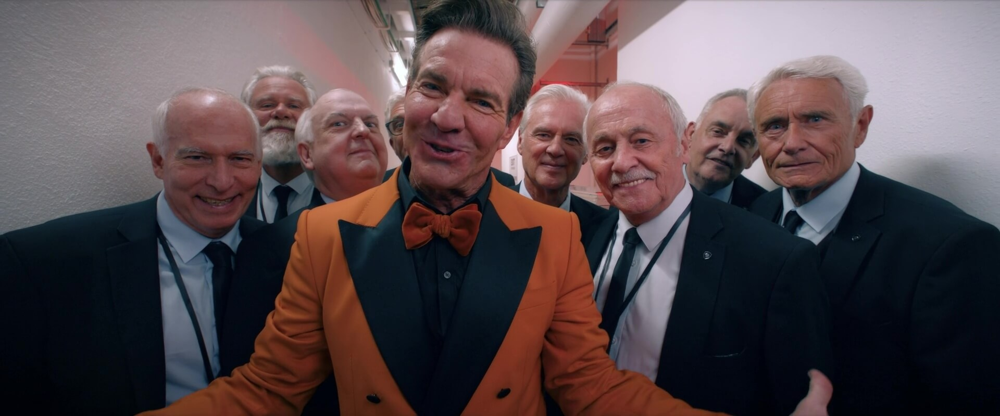

The medium shot is one of the most versatile camera shots. It's similar to the cowboy shot above, but frames from roughly the waist up and through the torso. So it emphasizes more of your subject while keeping their surroundings visible. Here's an example of the medium shot size from The Substance.
Medium shots may seem like one of the most standard cinematic techniques in film, but every shot size you choose will have an effect on the viewer. For example, a medium shot can make a fight scene more intimate and intense without losing placement or geography — ideal for two shots where subjects interact closely.
A medium shot can often be used as a buffer shot for dialogue scenes that have an important moment later that will be shown in a close-up shot.
If you don't use all of the different types of cinematic shots in film, how can you signal anything to your viewer without shot size contrast.
https://www.studiobinder.com/blog/ultimate-guide-to-camera-shots/